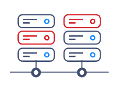
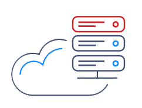
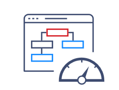

Surveillance du réseau
Vous pouvez utiliser Zabbix pour surveiller le trafic réseau, les interfaces réseau, et les erreurs sur les équipements réseau
Configurer des alertes en cas de défaillances réseau ou de dépassement de seuils de trafic.
|

Surveillance du serveurs
Je peux configurer Zabbix pour surveiller les performances de vos serveurs, y compris l'utilisation du processeur, de la mémoire, de l'espace disque, et les services en cours d'exécution.
Mettre en place des alertes pour être informé en cas de dépassement de seuils de performance définis.
|

Surveillance du cloud privé
Surveiller les performances des environnements de virtualisation (VMware, Hyper-V, etc.) en collectant des métriques telles que l'utilisation CPU, la mémoire allouée, et les mouvements de VM.
|

Surveillance des services
Zabbix vous permet de superviser divers services essentiels, tels que Active Directory, Exchange Server, serveurs Apache, bases de données, services réseau, et environnements de virtualisation.
|
Surveillance des applications
Intégrez Zabbix avec des applications métier pour surveiller les performances et la disponibilité des applications critiques.
Créez des tableaux de bord personnalisés pour afficher les métriques clés.
|